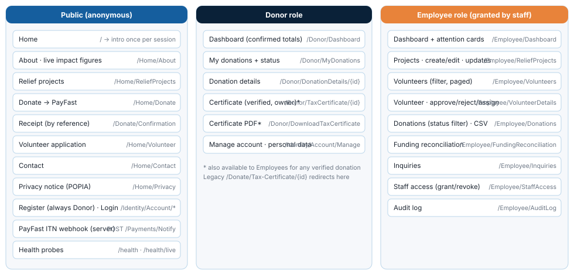
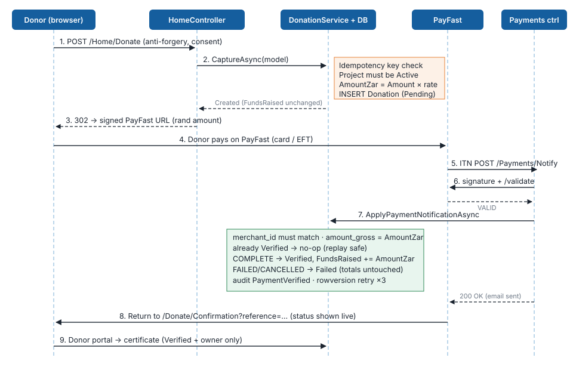
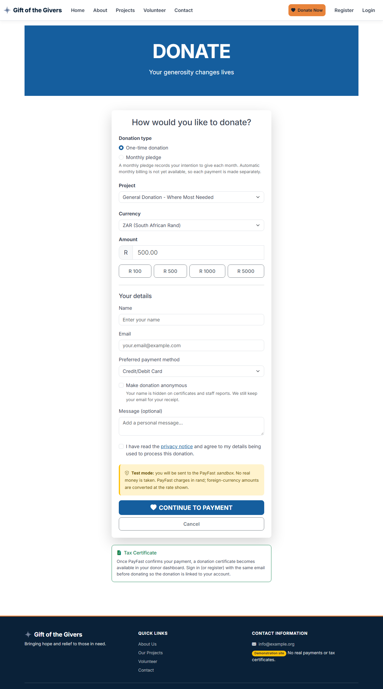
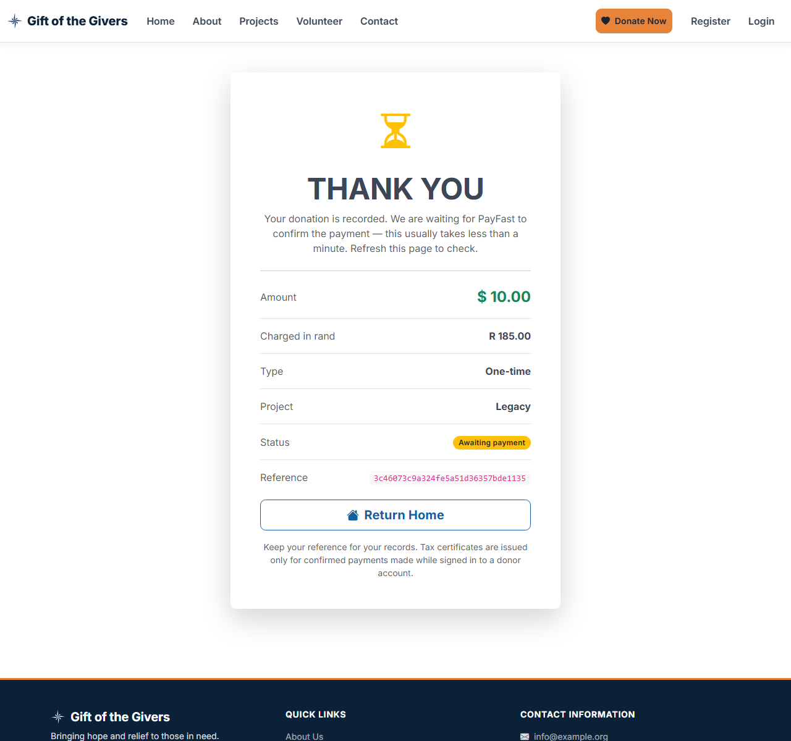
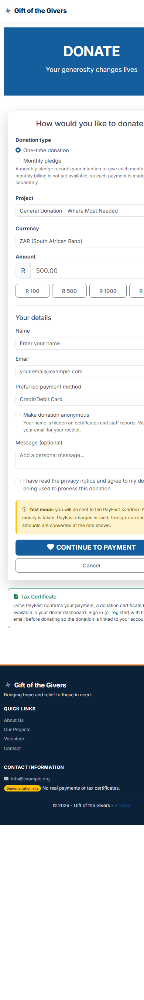
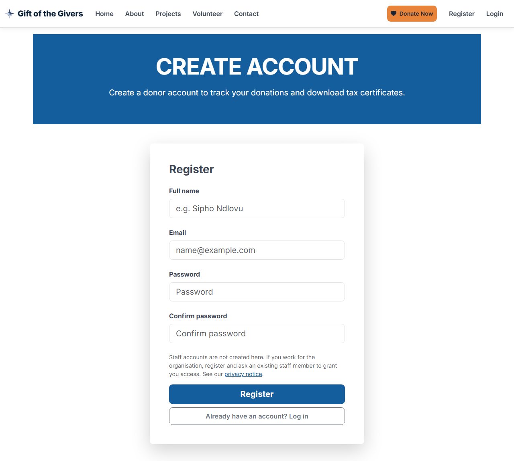
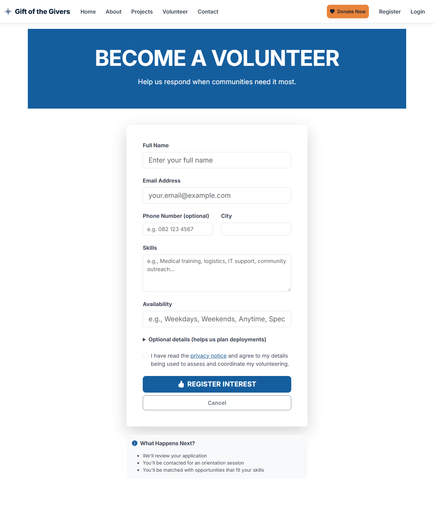

Deliverable 03
Application Flow
Site map, user journeys, state machines and route inventory, traced from the screen to the database.
1. Site map

Navigation rules:
- The top navigation always shows Home, About, Projects, Volunteer, Contact and the Donate Now button.
- Signed-in donors also see Donor Portal. Employees see Employee Portal: Dashboard, Projects, Volunteers, Donations, Funding Reconciliation, Inquiries, Staff Access, Audit Log.
- On the first visit to
/in each browser session, the visitor is sent to a short intro animation (skippable, and reduced-motion aware), which then returns them to the home page.
2. Journey J1 — Donate (core journey)

| Step | Screen / route | System behaviour | Data |
|---|---|---|---|
| 1 | GET /Home/Donate?projectId= | Form shown. Signed-in donors get their name and email pre-filled. Indicative rand equivalent shown for USD/EUR | — |
| 2 | POST /Home/Donate | Anti-forgery, validation (type, currency, amount 1–1,000,000, payment method, consent). Errors re-display the form with a summary | — |
| 3 | DonationService.CaptureAsync | Duplicate token → same donation. Project must be Active. Rand conversion. Insert as Pending | Donations +1 row; project total unchanged |
| 4 | 302 to PayFast | Signed URL for the rand amount; return, cancel and notify URLs carry the reference | — |
| 5 | PayFast | Donor pays by card or EFT, or cancels | — |
| 6 | POST /Payments/Notify (server to server) | Signature → validate → merchant → amount → status | Donations.PaymentStatus, ReliefProjects.FundsRaised, AuditLogs |
| 7 | GET /Donate/Confirmation?reference= | Receipt with live status (Awaiting payment / Paid / Failed) | — |
| 8 | Donor portal | Certificate available once Paid (owner only) | — |



Failure and edge paths
| Situation | Behaviour |
|---|---|
| Invalid input (e.g. unknown currency, consent not ticked) | Form re-displayed with errors (HTTP 200); nothing stored |
| Project suspended or completed | "Not accepting donations" message; nothing stored |
| Double click / resubmit | Same donation returned (idempotency key); the second redirect goes to the same checkout |
| Donor cancels on PayFast | Back to Donate with a "payment cancelled, not charged" banner; donation stays Pending |
| PayFast reports FAILED | Donation marked Failed; totals untouched; receipt offers Try again |
| ITN replayed | 200, no change |
| ITN amount or merchant mismatch | 400, donation stays Pending, error logged |
Payments disabled (PayFast:Enabled=false) | Donation stored as Pending; receipt explains that nothing was charged |
| More than 20 POSTs per minute from one IP | 429 Too Many Requests |
3. Journey J2 — Register and staff provisioning
| Step | Actor | Route | Result |
|---|---|---|---|
| 1 | Visitor | GET/POST /Identity/Account/Register | Account created with role Donor (no role choice). Signed in |
| 2a | First staff member | Deployment sets StaffAccess:BootstrapEmployeeEmails | On the next start, the account gets Employee (logged) |
| 2b | Existing employee | GET /Employee/StaffAccess → POST GrantEmployee(email) | Role granted; audit entry EmployeeGranted |
| 3 | Employee | POST RevokeEmployee(userId) | Role removed and security stamp rotated; cannot revoke self; audited |

4. Journey J3 — Volunteer
| Step | Actor | Route | Result |
|---|---|---|---|
| 1 | Visitor | GET/POST /Home/Volunteer | Validated (consent required; DOB optional, ≥ 16 years); stored as Pending with consent time |
| 2 | Employee | /Employee/Volunteers?status=Pending | Paged list filtered by status |
| 3 | Employee | /Employee/VolunteerDetails/{id} → Approve / Reject | Status set, audit entry, email if configured |
| 4 | Employee | Assign to an active project / Remove | VolunteerAssignments row (unique per pair); audited |

5. Journey J4 — Donation certificate
| Step | Actor | Route | Rule |
|---|---|---|---|
| 1 | Donor | /Donor/MyDonations | Certificate icon only on Paid rows |
| 2 | Donor / Employee | /Donor/TaxCertificate/{id} | 404 unless Verified and (owner or Employee); view audited |
| 3 | Donor / Employee | /Donor/DownloadTaxCertificate/{id} | PDF; download audited; demonstration watermark until PBO configured |
| — | Legacy links | /Donate/Tax-Certificate/{id}[/download] | 302 to the routes above |
| — | Integration | Function GET /api/tax-certificate/{reference} + function key | Verified only |
6. Journey J5 — Funding reconciliation
- The employee dashboard shows "N projects whose funding total needs review".
/Employee/FundingReconciliationlists, per project: offline funds, paid online, expected, recorded, difference, and awaiting payment.- Recalculate sets recorded = offline + paid (audit
FundingRecalculated). - Accept as offline keeps the recorded total and moves the unexplained difference into offline funds (audit
FundingAcceptedAsOffline). Only allowed when the difference is positive.
7. Journey J6 — Contact
POST /Home/Contact stores the inquiry with consent → confirmation page → an acknowledgement email if SendGrid is configured → staff see it at /Employee/Inquiries (open first) → Mark handled (audited).
8. State machines
Donation payment status
| From | Event | To | Side effects |
|---|---|---|---|
| — | Form submitted | Pending | None on totals |
| Pending | ITN COMPLETE, amount and merchant match | Verified | FundsRaised += AmountZar; certificate available; email; audit |
| Pending | ITN with any other status | Failed | Audit only |
| Verified | Any ITN | Verified | None (idempotent) |
| Failed | Any ITN | Failed | None |
Volunteer status
| From | Event | To |
|---|---|---|
| — | Application submitted | Pending |
| Pending / Rejected | Approve | Approved (ApprovalDate set) |
| Pending / Approved | Reject | Rejected (ApprovalDate cleared) |
Project status
Active ⇄ Suspended → Completed (set by staff). Only Active projects accept donations and new volunteer assignments.
9. Route inventory
| Method | Route | Auth | Purpose |
|---|---|---|---|
| GET | /, /Home/About, /Home/ReliefProjects, /Home/Privacy | Public | Information pages |
| GET/POST | /Home/Donate | Public | Donation form / capture → PayFast |
| GET | /Donate/Confirmation?reference= | Public (unguessable reference) | Receipt |
| GET/POST | /Home/Volunteer, /Home/Contact | Public | Applications and inquiries |
| GET | /Volunteer/Confirmation, /Contact/Confirmation | Public | Confirmations |
| POST | /Payments/Notify | PayFast signature + validation | ITN webhook |
| GET | /health, /health/live | Public | Readiness / liveness |
| * | /Identity/Account/* | Varies | Register (Donor only), Login, Manage |
| GET | /Donor/Dashboard, /Donor/MyDonations, /Donor/DonationDetails/{id} | Donor | Donor portal |
| GET | /Donor/TaxCertificate/{id}, /Donor/DownloadTaxCertificate/{id} | Donor (owner) or Employee | Certificates |
| GET | /Donate/Tax-Certificate/{id}[/download] | Donor or Employee | Legacy redirects |
| GET | /Employee/Dashboard, ReliefProjects, Volunteers, VolunteerDetails/{id}, Donations, ExportDonations, FundingReconciliation, Inquiries, AuditLog, StaffAccess | Employee | Staff views |
| GET/POST | /Employee/CreateReliefProject, EditReliefProject/{id}, CreateProjectUpdate, EditProjectUpdate/{id} | Employee | Project management |
| POST | /Employee/ApproveVolunteer, RejectVolunteer, AssignVolunteer, UnassignVolunteer, MarkInquiryHandled, RecalculateFunding, AcceptFundingAsOffline, GrantEmployee, RevokeEmployee | Employee | Staff actions (audited) |
| GET | Function /api/tax-certificate/{reference} | Function key | Certificate PDF |